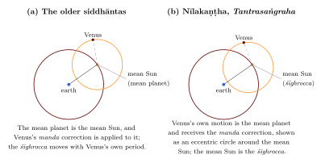

Chapter 10: The Kerala School¶
10.1 Astronomy on the Malabar Coast¶
From the late fourteenth to the seventeenth century, a succession of astronomers working in a small area of central Kerala, between the Bhāratappuḻa (Nila) river and the region of Thrissur, produced some of the most original work in the history of Indian astronomy and mathematics. They are usually called the “Kerala school”. Most were Nampūtiri Brahmins or members of temple-service communities (Vāriyar, Piṣāraṭi), attached to temples and to the households (illams) of their families. They wrote in Sanskrit, and some of their most important explanations in Malayalam. Their work was known in Kerala until the nineteenth century but hardly outside it, and it reached modern scholarship only in 1834 (Whish 1834). The standard history is that of Sarma (1972); much of the source material has since been edited and translated.
10.2 Earlier Kerala Astronomy: Parahita and Vākya¶
Kerala astronomy belonged to the Ārya school. By tradition, the Parahita system of Haridatta was promulgated in 683 CE at the great festival at Tirunāvāya. It corrected the parameters of Āryabhaṭa by a correction proportional to the elapsed years of the Śaka era, and it used the kaṭapayādi notation (Chapter 1) to state its numbers.
The vākya (“sentence”) system, used in Kerala and Tamil Nadu, went further in making computation easy. For the Moon, the best-known set of vākyas (traditionally ascribed to Vararuci) consists of 248 short phrases, each encoding in kaṭapayādi the Moon’s true longitude on successive days of a cycle of 248 days. The cycle works because 248 days are almost exactly nine anomalistic months (9 × 27.5546 = 247.99 days), so that after 248 days the Moon’s irregularity repeats. Combined with a few corrections, the vākyas allowed the Moon’s position to be found with little arithmetic. Similar vākyas were composed for the Sun and planets, and the vākya almanac remains in use in parts of Tamil Nadu.
10.3 The Lineage¶
The school is defined by a chain of teachers and pupils (Sarma 1972; Plofker 2009).
| Astronomer | Dates | Principal works and contributions |
|---|---|---|
| Mādhava of Saṅgamagrāma | c. 1340–1425 | Veṇvāroha (lunar computation); series for \(\pi\), sine, cosine and arctangent attributed to him by later authors |
| Parameśvara of Vaṭaśśeri | c. 1360–1455 | Dṛggaṇita (1431); Goladīpikā; commentaries; decades of eclipse observation |
| Dāmodara | 15th c. | son of Parameśvara; teacher of Nīlakaṇṭha and Jyeṣṭhadeva |
| Nīlakaṇṭha Somayājī | 1444–c. 1545 | Tantrasaṅgraha (1500); commentary on the Āryabhaṭīya; Golasāra; Jyotirmīmāṃsā; revised planetary model |
| Jyeṣṭhadeva | c. 1500–1610 | Yuktibhāṣā (Malayalam, c. 1530): demonstrations of the school’s results |
| Citrabhānu | 16th c. | algebraic work |
| Śaṅkara Vāriyar | c. 1500–1560 | commentaries on the Tantrasaṅgraha and (with Nārāyaṇa) on the Līlāvatī (Kriyākramakarī) |
| Acyuta Piṣāraṭi | c. 1550–1621 | Sphuṭanirṇaya; reduction of the Moon’s position to the ecliptic |
| Putumana Somayājī | date uncertain (17th–18th c.?) | Karaṇapaddhati |
| Śaṅkara Varman | 19th c. | Sadratnamālā (1819 or 1823; sources differ), a late summary |
10.4 Observation and Revision¶
The Kerala astronomers were unusually explicit about the relation between computation and observation. Two figures stand out: Parameśvara, who put the principle into practice, and Nīlakaṇṭha, who reflected on it (Sarma 1972; Minkowski 2002).
10.4.1 Parameśvara¶
Parameśvara of Vaṭaśśeri (Alathur), on the Nila river, was the most prolific author of the school. Having compared eclipse predictions with what he saw over several decades, he introduced a new set of parameters, the dṛk (“seen”) system of his Dṛggaṇita (1431), to replace the Parahita system where it had become inaccurate. He also wrote a short treatise on the sphere (Goladīpikā), works on eclipses, and commentaries on the Āryabhaṭīya, on Bhāskara I’s works, on the Sūryasiddhānta and on the Līlāvatī, among others. His commentaries often record his own views and corrections. His career is the best example in the Indian tradition of a sustained programme of comparing computation with observation, and his work was the starting point for his successors (Sarma 1972).
10.4.2 Nīlakaṇṭha’s Jyotirmīmāṃsā¶
Nīlakaṇṭha’s Jyotirmīmāṃsā is unusual in Indian astronomy because it is about the nature of astronomical knowledge itself. Written in a style influenced by the Mīmāṃsā school of scriptural interpretation, it asks how the parameters of the siddhāntas, which some held to be revealed or infallible, can be known and justified. Nīlakaṇṭha’s answer is that they rest on observation and reasoning, not on revelation; that every system becomes inaccurate in time; that the authors of the classical texts themselves derived and revised them in this way; and that the astronomers of every age must do the same. He recommends, in particular, the careful observation of eclipses as the decisive test (Sarma 1972; Minkowski 2002).
10.5 Infinite Series¶
10.5.1 The results¶
The most celebrated achievement of the school is a set of infinite series for the circumference of the circle and for trigonometric quantities. Later Kerala authors (Nīlakaṇṭha, Śaṅkara Vāriyar, Jyeṣṭhadeva) attribute them to Mādhava, whose own surviving works do not contain them (Plofker 2009; Sarma et al. 2008). In modern notation they include:
The texts state these in words and with the Sine and arc in a circle of radius \(R\), not with modern functions; the formulae above are modern translations. The series for \(\pi\) converges very slowly, and the Kerala astronomers devised “end corrections” (antyasaṃskāra), rational expressions added at the point where the series is cut off, which greatly improve the result, and transformed series that converge faster. With such methods they obtained values of \(\pi\) of high accuracy. The verse attributed to Mādhava and analysed digit by digit in Section 1.8 gives the circumference of a circle of diameter \(9 \times 10^{11}\) as 2,827,433,388,233, which corresponds to \(\pi \approx 3.14159265359\), correct to eleven decimal places.
In Europe the series for the arctangent and for \(\pi/4\) were found by James Gregory (1671) and Leibniz (1673–74), and the sine and cosine series by Newton (1669). The Kerala results are earlier, a fact now generally recognised.
10.5.2 Purpose and demonstration¶
The series were not ends in themselves. They served to compute the Sine and arc more accurately than the old tables, and Mādhava is credited with a table of Sines at the traditional 24 intervals, given to fractions of a second of arc. The demonstrations of the series are preserved in the Malayalam Yuktibhāṣā of Jyeṣṭhadeva and in Śaṅkara Vāriyar’s commentaries. They proceed by dividing a quantity (for example, an arc of a circle) into a large number of small parts, expressing the contribution of each, and summing using results on the sums of powers of integers (saṅkalita), which for a very large number of parts can be approximated by simple expressions (Sarma et al. 2008; Divakaran 2018).
Modern readers naturally see in these arguments ideas related to integration and to limits. The comparison is legitimate if it is made carefully. The Kerala demonstrations are rigorous within their own framework and are a major achievement; but they concern particular geometrical quantities, they do not formulate the general concepts of derivative and integral, and they are not “calculus” in the sense of Newton and Leibniz, still less a “Riemann integral”. The results are best described in the terms historians of mathematics now use: power series for trigonometric functions and \(\pi\), derived by methods of discretisation and summation. Their mathematics is examined in Volume 11.
10.5.3 From series to tables¶
The series made it possible to compute the Sine of any arc, and the radius itself, to much higher precision than before. With an accurate value of \(\pi\), the radius of a circle whose circumference is \(21{,}600'\) is \(21{,}600/2\pi = 3437;44,48\) minutes, that is, \(3437'\) \(44”\) \(48”'\), instead of the traditional round \(3438'\). Mādhava’s table of Sines, at the traditional intervals of \(3^\circ 45'\), gives its values to thirds (sixtieths of a second) of arc and is accurate in almost every entry to the last place given (Plofker 2009). Such tables, and the series for interpolating between their entries, were used in the computation of the vākyas and of planetary positions. The mathematics of the school was thus driven by, and served, the needs of astronomical computation.
10.5.4 Discovery and recognition¶
Charles Whish, an official of the East India Company in Malabar, described the series of the Tantrasaṅgraha, Yuktibhāṣā, Karaṇapaddhati and Sadratnamālā in a paper read in 1832 and published in 1834 (Whish 1834). His work attracted little attention for a century. The Kerala results were brought back into view by Indian scholars in the mid-twentieth century, and the critical editions of K. V. Sarma and the translations of Ramasubramanian, Srinivas and Sriram have since made the texts accessible (Sarma 1972; Sarma et al. 2008; Ramasubramanian and Sriram 2011). The Kerala series now appear in standard histories of mathematics, though popular accounts often still credit them only to their European rediscoverers.
10.6 Nīlakaṇṭha’s Planetary Model¶
10.6.1 The revision¶
In the classical models (Chapter 7) the inferior planets, Mercury and Venus, are treated differently from the superior ones: their mean planet is the mean Sun, and their own heliocentric motion is assigned to the śīghrocca. One consequence is that the classical rule for the latitude of Mercury and Venus, computed from the mean planet, gives wrong results. In the Tantrasaṅgraha (1500) Nīlakaṇṭha changed the model for the inferior planets: he took as the planet’s mean motion the motion that the older texts assigned to the śīghrocca (the motion around the Sun), applied the manda correction to this, and treated the mean Sun as the śīghrocca. The inferior planets were thus handled in the same way as the superior planets, and the latitudes came out correctly (Ramasubramanian and Sriram 2011). Figure 10.1 shows the change.

10.6.2 The “geo-heliocentric” interpretation¶
K. Ramasubramanian, M. D. Srinivas and M. S. Sriram have argued that passages in Nīlakaṇṭha’s later writings (his commentary on the Āryabhaṭīya and the Golasāra) describe a picture in which the five planets move in eccentric orbits around the mean Sun, while the Sun moves around the earth: a geometrical arrangement like the one Tycho Brahe proposed in 1588 (Ramasubramanian et al. 1994). This is an important finding about Nīlakaṇṭha’s understanding of the geometry of his model. It should be stated with three qualifications. First, Nīlakaṇṭha’s system remained geocentric: the earth was at rest at the centre, and the Sun moved around it. Second, the interpretation of the relevant passages, and how far Nīlakaṇṭha meant a physical arrangement rather than a computational one, is discussed by historians. Third, there is no evidence of any connection between Nīlakaṇṭha’s model and Tycho’s. Calling the model “heliocentric” or saying that it “anticipated Copernicus” is therefore misleading. Its achievement was to make the treatment of all five planets consistent and to correct a long-standing error in the theory of latitudes.
10.7 Other Contributions¶
The Kerala astronomers also refined the theory of the Moon, adding corrections to its true position; treated the reduction of the Moon’s position from its inclined orbit to the ecliptic (Acyuta Piṣāraṭi); computed eclipses and the visibility of the lunar crescent with new care; and wrote large numbers of commentaries, in Sanskrit and Malayalam, on the Āryabhaṭīya, the Līlāvatī and their own texts. The Karaṇapaddhati of Putumana Somayājī shows how the parameters of the vākya system could be derived from those of the siddhāntas using the school’s mathematics; it has been translated with a full commentary by Pai et al. (2018). Many of these works were edited by K. V. Sarma, among them the Tantrasaṅgraha with Śaṅkara Vāriyar’s two commentaries (Nīlakaṇṭha Somayājī 1977; Sarma 1972).
10.8 Did the Kerala Series Reach Europe?¶
Jesuit missionaries were active in Kerala from the mid-sixteenth century, learned Malayalam and Sanskrit, and were interested in Indian calendrical methods. George Gheverghese Joseph and C. K. Raju have argued that Kerala mathematics may have been transmitted to Europe through them and influenced the development of the calculus (Joseph 2011; Raju 2007). The hypothesis is plausible as a possibility, since the routes existed. But no document has been found showing that any European knew of the Kerala series before Whish’s paper of 1834, and the European discoveries of the seventeenth century can be traced through their own sources. Most historians of mathematics therefore regard transmission as unproven (Plofker 2009). The value of the Kerala achievement does not depend on the answer.
Further Reading¶
Sarma (1972) is the basic history. Ramasubramanian and Sriram (2011) translate the Tantrasaṅgraha with a detailed commentary, Sarma et al. (2008) the Yuktibhāṣā and Pai et al. (2018) the Karaṇapaddhati. Plofker (2009) and Divakaran (2018) discuss the mathematics; Ramasubramanian et al. (1994) present the interpretation of Nīlakaṇṭha’s model.